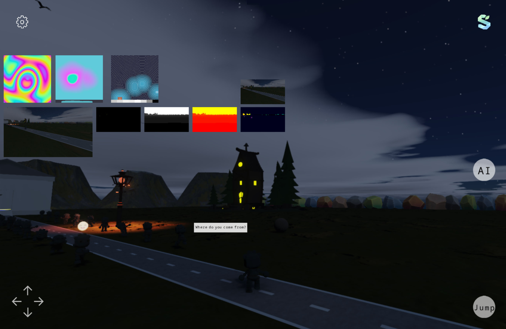

Everything in the post chain — TAA, bloom, GTAO, DDGI, the sky LUTs — is a
ComputeEffect, registered through the same public API you would
use for your own. There is no privileged built-in path, which means an effect you write has
exactly the capabilities the shipped ones have.
Four members. Name for diagnostics,
Phase for when it runs,
Initialize to create resources and
Record to dispatch. An optional
OnResize rebuilds anything sized to the window.
using Season.Rendering;
sealed class EdgeEffect : ComputeEffect
{
public const string TextureName = "compute://edges";
public override string Name => "edges";
public override ComputePhase Phase => ComputePhase.AfterScene;
ComputeKernel? _kernel;
int _width, _height;
public override bool Initialize(IGraphics graphics)
{
_width = graphics.Width;
_height = graphics.Height;
_kernel = graphics.CreateComputeKernel(new ComputeKernelDesc
{
Name = "edges",
Source = new ShaderSourceSet { Hlsl = Hlsl, EntryPoint = "CSMain" },
Bindings = /* ... */,
WorkgroupX = 8, WorkgroupY = 8, WorkgroupZ = 1
});
if (_kernel == null) return false;
return graphics.CreateComputeTexture(TextureName, _width, _height);
}
public override void Record(IGraphics graphics)
{
graphics.DispatchCompute(new ComputeDispatchArgs
{
Kernel = _kernel!,
Resources = /* ... */,
GroupsX = (_width + 7) / 8,
GroupsY = (_height + 7) / 8,
GroupsZ = 1
});
}
}
Initialize returning false is not an error condition, it is
the graceful-degradation path: the effect is dropped, nothing it created is left behind, and
the frame runs without it. Use it for anything you discover at startup — no compute
support on this device, no shader source for this backend, a mode the user has turned off.
Every built-in effect does this, which is why the same application runs on a machine with no
compute at all.
ShaderSourceSet has an
Hlsl, Glsl,
Msl and Wgsl slot plus an
EntryPoint that defaults to
CSMain. A null slot means that backend cannot run this kernel, and
registration fails cleanly there rather than at draw time.
| Type | What it is for |
|---|---|
ComputeKernelDesc | Name, source set, binding list, workgroup size. ValidateWorkgroupSize() catches the sizes no backend accepts. |
ComputeBindingDesc | One slot: its ComputeBindingType and, for storage textures, its ComputeStorageFormat. |
ComputeResourceRef | What you bind at dispatch — a texture name, a StorageBuffer or a render target. Implicit conversions mean you usually just pass the string. |
ComputeDispatchArgs | A ref struct: kernel, push constants, resource refs and group counts. Nothing to allocate per frame. |
Workgroup size defaults to 8×8×1, which is the shape almost every full-screen kernel
wants. Keep the value in the descriptor and the divisor in
Record in agreement — nothing checks that for you, and the
symptom is a missing strip of pixels along the right and bottom edges.
Register after base.Create(), when the graphics device exists.
Effects in the same phase are recorded in registration order, so registration order is
execution order.
void RegisterEffects()
{
var g = Season.Basic.Graphics.Instance;
// Returns false when the effect declined to initialize. Skip the
// debug control that would display its output and carry on.
if (FrameSchedule.RegisterCompute(g, new EdgeEffect()))
AddControl(new Sprite2D { Name = EdgeEffect.TextureName, /* ... */ });
}
Both live in AfterScene, and bloom has to consume the
resolved image. Registered the other way round, bloom amplifies the shimmer that TAA was
about to remove, and the result is visible flicker on specular highlights rather than a
subtle difference. The reference application registers plasma, scene copy, TAA, then bloom,
in that order, with the reason in a comment.
UnregisterCompute releases everything the effect created;
ResizeCompute is called for you on a window change and forwards to
OnResize. You never call
Execute — the frame does.
| Phase | When | Typical use |
|---|---|---|
FrameStart | Before the scene is drawn. | Anything the scene will read: sky and transmittance LUTs, cloud noise, procedural textures, an SDF slice view. |
AfterScene | Scene colour, depth and velocity are available. | Post: resolve, tone-mapping inputs, AO, bloom, debug visualizations. |
Record may only dispatch
No enabling or disabling passes, no draw calls, no barriers. Synchronisation is handled
inside the backend's DispatchCompute, which is what keeps one
effect from corrupting another's resources and what lets four backends implement the same
effect list. If a kernel needs the output of a previous kernel, dispatch them in sequence in
the same Record — that is exactly what GTAO does for its
two blur passes.
An effect creates its storage textures under a
compute:// name and publishes the interesting one on
FrameSchedule so the rest of the frame can find it without
knowing the type. GtaoEffect creates
compute://gtao/ao and assigns it to
FrameSchedule.AoTexture; the lighting pass reads that field.
| Effect | Phase | Publishes |
|---|---|---|
SkyAtmosphereEffect | FrameStart | SkyViewTexture, CloudNoiseTexture, AerialLutTexture |
PlasmaEffect | FrameStart | compute://plasma — the compute-baseline smoke test |
Sdf3DViewEffect | FrameStart | compute://sdf3dview |
TaaEffect | AfterScene | compute://taa0 / taa1 ping-pong, TaaActive |
BloomEffect | AfterScene | BloomTexture, plus its compute://bloom/ mip chain |
GtaoEffect | AfterScene | AoTexture |
DdgiEffect | AfterScene | Probe and SDF volumes |
DepthView, VelocityView, SceneColorCopy | AfterScene | compute://depthview, compute://velocityview, compute://scenecopy |
FrameSchedule also exposes the pass outputs themselves —
SceneColor, SceneDepth,
SceneVelocity, ShadowMap,
PostColor — and the flags that say whether the shadow and
post passes ran at all. Read those in Initialize to decide whether
your effect can work.
Because outputs are named textures and a
Sprite2D draws a texture by name, putting any intermediate stage
on screen is three lines. This is the entire implementation of the reference application's debug
mode.
AddControl(new Sprite2D
{
Name = Season.Rendering.Effects.GtaoEffect.TextureName,
Color = Colors.White,
PosX = 20, PosY = 580, Width = 240
});
Debug mode
Depth, motion vectors, GTAO, the bloom mip chain, the TAA history and the scene SDF are all
reachable this way. The one exception is a 3D output: those use a
compute3d:// prefix and a sprite cannot display a volume, so
visualizing one needs a slice kernel —
Sdf3DViewEffect is that kernel, and a reasonable template if you
write a volumetric effect of your own.
Post-processing and compute covers the frame graph these effects plug into and the per-backend support matrix. Global illumination and AO walks through the two largest examples.
That is the end of the guides. The source is the reference beyond this point, and the reference
application in Apps/Engine is the worked example for every page
here.